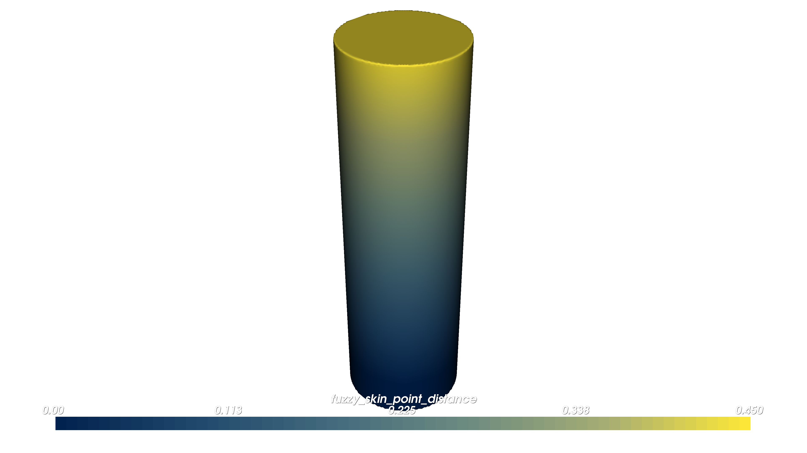
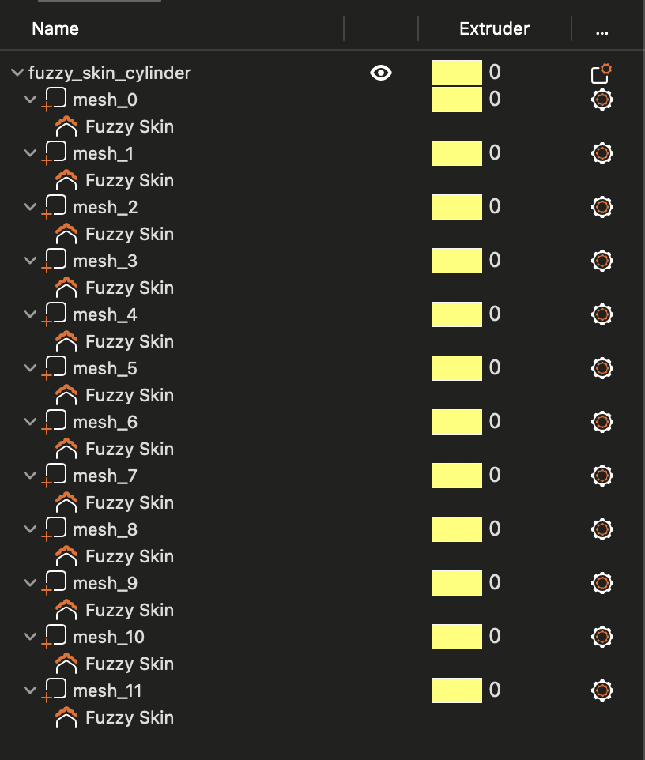
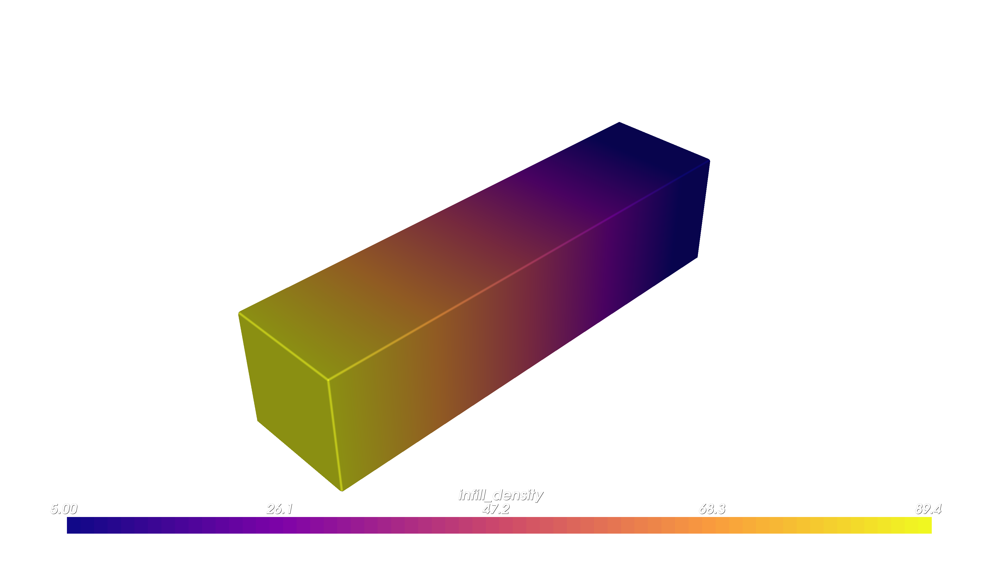
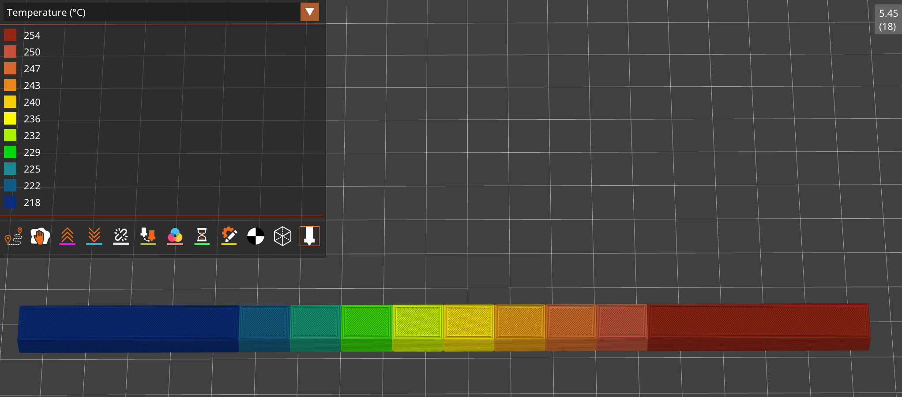

Slicer Project Compiler#
The SlicerProjectCompiler turns OpenVCAD designs that carry scalar slicer attributes (for example INFILL_DENSITY, FUZZY_SKIN_POINT_DISTANCE, or TEMPERATURE) into a PrusaSlicer-style 3MF project (.3mf). You import that file into PrusaSlicer (or another slicer that understands the same project layout), slice, and print on filament / FFF hardware.
This page explains how the compiler works (by method, not line-by-line code), walks through examples, and documents the Python API. Renders show the OpenVCAD fields; PrusaSlicer screenshots show the sliced out.
Prerequisites#
OpenVCAD with
pyvcadandpyvcad_compilersinstalled.Familiarity with scalar attributes on geometry (see Getting Started with OpenVCAD, especially Lesson 4: Attributes, and the Functional Grading Guide).
What this compiler is for#
Use Slicer Project when you want spatially varying slicer settings derived from continuous fields on your model, exported as a single project file for PrusaSlicer, instead of voxel PNG stacks for inkjet workflows. For slice images, see the Material Inkjet and Color Inkjet guides.
Opening your project in PrusaSlicer#
The compiler only writes the .3mf. It does not launch a slicer.
Run your Python script (or build the compiler in code) so
compile()finishes and the.3mfpath exists.Open PrusaSlicer, use File → Import, and select the generated
.3mf(or drag it into the window).Inspect sub-volumes and per-volume settings in the Plater / Models UI, then Slice now and review the G-code preview (layer view, color by feature, etc.).
Printer and filament choices inside PrusaSlicer are up to you; the .3mf carries model geometry and embedded project/config produced by the compiler.
How it works#
At a high level, compile() does the following:
Discover attributes on your tree and classify each supported name using an internal registry. There are two families:
Settings mesh: attributes that map to PrusaSlicer per-volume metadata (for example
INFILL_DENSITY→fill_density,FUZZY_SKIN_POINT_DISTANCE→fuzzy_skin_point_dist). The compiler does not need separate.iniprofiles for this mode.Virtual extrusion: attributes that must be driven through G-code (today this path is built around
TEMPERATUREwith aFLOW_RATEcompanion). This mode requiresprinter_profile_pathandfilament_profile_pathpointing to PrusaSlicer.inifiles so the compiler can inject toolchange-style G-code derived from templates. Unsupported attribute names are printed to the console and ignored.
Sample the prepared tree on a voxel grid over the bounding box using your
voxel_size. For each voxel inside the solid, the compiler reads double-valued attributes it cares about.Estimate ranges for each segmented attribute over the solid, then split each range into
num_regionssub-ranges (default 10). Each sub-range becomes a region of the solid where attribute values are similar.Build geometry for those regions (segmented meshes), attach Prusa-compatible metadata (settings mesh) and/or extruder / tool assignments (virtual extrusion), and package everything into a
.3mfwith the expected config attachments.Progress and cancellation follow the usual
CompilerBasebehavior.
The important idea: continuous fields in OpenVCAD become piecewise-constant regions in the slicer project—each region carries one representative setting (derived from the sub-range), not a unique value per voxel inside Prusa’s mesh-metadata model.
Pipeline overview#
Classify supported attributes → sample on a grid → segment by attribute ranges → emit meshes + metadata and/or virtual extruders → write .3mf.
Reference: Python API#
Constructor#
SlicerProjectCompiler(root, voxel_size, output_file_path, num_regions=10, printer_profile_path="", filament_profile_path="")
Argument |
Meaning |
|---|---|
|
Root |
|
|
|
Full path to the output |
|
Number of sub-ranges per segmented attribute (default 10). |
|
PrusaSlicer printer |
|
PrusaSlicer filament |
Methods (including CompilerBase)#
Method |
Role |
|---|---|
|
Build the |
|
Discovery list: every attribute name the registry knows (settings mesh + virtual extrusion + companions). The tree does not need all of them; only present attributes participate. |
|
Request cooperative cancellation. |
|
|
For autodoc signatures, see pyvcad_compilers (SlicerProjectCompiler, CompilerBase).
Examples and figures#
The scripts below live under examples/compilers/slicer_project/ and write .3mf files under output/ next to each script. Run them from the repository with your venv, then import the .3mf into PrusaSlicer as described above.
(a) Fuzzy skin gradient on a cylinder#
Design (FUZZY_SKIN_POINT_DISTANCE ramp along Z): matches the idea of examples/applications/slicer_settings_mesh/fuzzy_skin_cylinder.py. Script: 01_fuzzy_skin_cylinder.py → output/fuzzy_skin_cylinder.3mf.
"""
Slicer project - fuzzy skin gradient (cylinder)
==============================================
Upright cylinder with **FUZZY_SKIN_POINT_DISTANCE** ramping along Z, compiled
to a PrusaSlicer-style **.3mf** for per-volume fuzzy skin settings.
Companion to: docs/source/guides/compilers/slicer-project.md
See also: examples/applications/slicer_settings_mesh/fuzzy_skin_cylinder.py
"""
import os
import pyvcad as pv
import pyvcad_compilers as pvc
import pyvcad_rendering as viz
cylinder_height_mm = 100.0
cylinder_radius_mm = 15.0
edge_buffer_mm = 10.0
half_h = 0.5 * cylinder_height_mm
span = 2.0 * (half_h - edge_buffer_mm)
fuzzy_expr = (
f"0.4 * clamp((z + {half_h} - {edge_buffer_mm}) / ({span}), 0, 1)"
)
cylinder = pv.Cylinder(pv.Vec3(0, 0, 0), cylinder_radius_mm, cylinder_height_mm)
cylinder.set_attribute(
pv.DefaultAttributes.FUZZY_SKIN_POINT_DISTANCE,
pv.FloatAttribute(fuzzy_expr),
)
root = cylinder
viz.Render(root)
_here = os.path.dirname(os.path.abspath(__file__))
out_dir = os.path.join(_here, "output")
os.makedirs(out_dir, exist_ok=True)
out_3mf = os.path.join(out_dir, "fuzzy_skin_cylinder.3mf")
regions = 12
compiler = pvc.SlicerProjectCompiler(
root,
pv.Vec3(0.25, 0.25, 0.25),
out_3mf,
regions,
)
compiler.compile()
print("Wrote", out_3mf)
OpenVCAD preview (field used for segmentation):
OpenVCAD (fuzzy skin distance)

PrusaSlicer:
Slicer Preview (left: model preview | right: g-code fuzzy skin texture preview)

Models / sub-volumes (fuzzy skin overrides)

(b) Infill density gradient on a bar#
Design (INFILL_DENSITY ramp along X): same idea as examples/applications/slicer_settings_mesh/infill_density_bar.py. Script: 02_infill_density_bar.py → output/infill_density_bar.3mf.
"""
Slicer project - infill density gradient (bar)
============================================
Rectangular bar with **INFILL_DENSITY** ramping along X, compiled to a **.3mf**
with per-volume **fill_density** metadata for PrusaSlicer.
Companion to: docs/source/guides/compilers/slicer-project.md
See also: examples/applications/slicer_settings_mesh/infill_density_bar.py
"""
import os
import pyvcad as pv
import pyvcad_compilers as pvc
import pyvcad_rendering as viz
bar_size_x = 100.0
bar_size_y = 25.0
bar_size_z = 25.0
edge_buffer_mm = 10.0
half_x = 0.5 * bar_size_x
span = 2.0 * (half_x - edge_buffer_mm)
infill_expr = (
f"5 + 75 * clamp((x + {half_x} - {edge_buffer_mm}) / ({span}), 0, 1)"
)
bar = pv.RectPrism(pv.Vec3(0, 0, 0), pv.Vec3(bar_size_x, bar_size_y, bar_size_z))
bar.set_attribute(pv.DefaultAttributes.INFILL_DENSITY, pv.FloatAttribute(infill_expr))
root = bar
viz.Render(root)
_here = os.path.dirname(os.path.abspath(__file__))
out_dir = os.path.join(_here, "output")
os.makedirs(out_dir, exist_ok=True)
out_3mf = os.path.join(out_dir, "infill_density_bar.3mf")
regions = 12
compiler = pvc.SlicerProjectCompiler(
root,
pv.Vec3(0.25, 0.25, 0.25),
out_3mf,
regions,
)
compiler.compile()
print("Wrote", out_3mf)
OpenVCAD preview:
OpenVCAD (infill density)

PrusaSlicer G-code preview (cutaway to show internal infill):
G-code preview (infill gradient, cutaway)

(c) Temperature + flow (virtual extrusion)#
Similar in spirit to examples/applications/foaming_filaments/compensation_demo/compensation_pla_demo.py: TEMPERATURE field plus FLOW_RATE from a lookup table via AttributeModifier. Script: 03_temperature_compensation_demo.py → output/temperature_compensation_demo.3mf, using printer/filament .ini files from examples/applications/foaming_filaments/profiles/.
"""
Slicer project - temperature + flow (virtual extrusion)
=======================================================
**TEMPERATURE** field with **FLOW_RATE** from a lookup (**AttributeModifier**),
similar to the foaming PLA compensation demo. Requires printer and filament
**.ini** profiles for virtual-extrusion G-code injection.
Companion to: docs/source/guides/compilers/slicer-project.md
See also: examples/applications/foaming_filaments/compensation_demo/compensation_pla_demo.py
"""
import os
import sys
import pyvcad as pv
import pyvcad_compilers as pvc
import pyvcad_rendering as viz
_here = os.path.dirname(os.path.abspath(__file__))
_profiles = os.path.normpath(os.path.join(_here, "..", "..", "applications", "foaming_filaments", "profiles"))
sys.path.insert(0, _profiles)
from flow_compensation_data import foaming_pla_flow_compensation
temperature_attr = pv.FloatAttribute("max(min((x/3+236),256),216)")
rect_prism = pv.RectPrism(pv.Vec3(0, 0, 0), pv.Vec3(200, 10, 10))
rect_prism.set_attribute(pv.DefaultAttributes.TEMPERATURE, temperature_attr)
flow_entries = [pv.LookupTableEntry(kv[0], kv[0], kv[1]) for kv in foaming_pla_flow_compensation]
mod_func = pv.LookupTableConverter(
[pv.DefaultAttributes.TEMPERATURE],
[pv.DefaultAttributes.FLOW_RATE],
flow_entries,
pv.InterpolationMode.LINEAR,
)
mod = pv.AttributeModifier(mod_func, rect_prism)
root = mod
viz.Render(root)
out_dir = os.path.join(_here, "output")
os.makedirs(out_dir, exist_ok=True)
out_3mf = os.path.join(out_dir, "temperature_compensation_demo.3mf")
printer_profile_path = os.path.join(_profiles, "prusa_xl_multitool.ini")
filament_profile_path = os.path.join(_profiles, "ColorFabb_LW_PLA.ini")
regions = 10
compiler = pvc.SlicerProjectCompiler(
root,
pv.Vec3(0.25, 0.25, 0.25),
out_3mf,
regions,
printer_profile_path,
filament_profile_path,
)
compiler.compile()
print("Wrote", out_3mf)
OpenVCAD preview (temperature):
OpenVCAD (temperature)

PrusaSlicer G-code preview (color or tooltip by temperature):
G-code preview (temperature)

Limitations#
Piecewise regions: each segment gets one representative slicer value, not a unique value per voxel in the slicer metadata.
Unsupported attributes on the tree are skipped (with a console message); if no supported attributes are found,
compile()fails.Virtual extrusion depends on bundled G-code templates and
.iniinputs that must match your workflow.Slicer compatibility is aimed at PrusaSlicer-style 3MF projects; other slicers may require export or conversion.
Further examples#
examples/compilers/slicer_project/— scripts paired with this guide (01…03).examples/applications/slicer_settings_mesh/— additional settings-mesh demos.examples/applications/foaming_filaments/compensation_demo/— temperature / flow compensation patterns and profile assets.